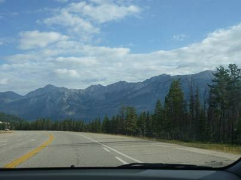
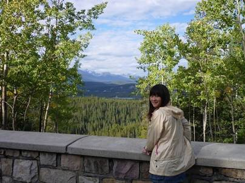
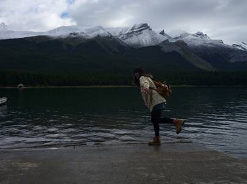
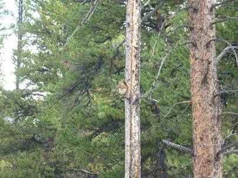
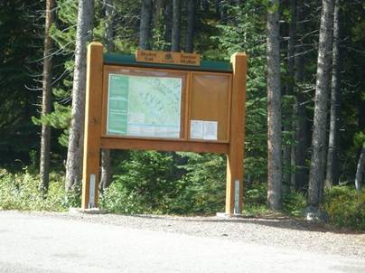
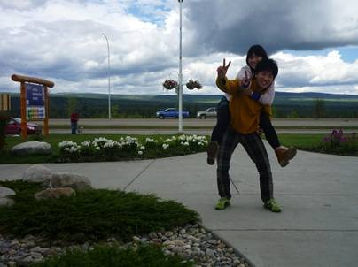
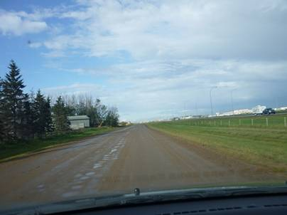
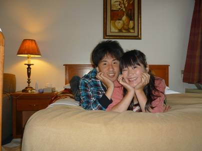
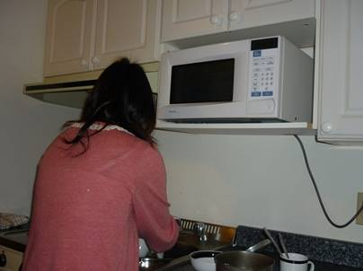
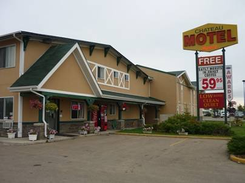

７日目(9/10)～石油の町、エドモントン～
Jasper toEdmonton


Skylineトレイルでの登山は断念したが、その登山口には風光明媚な場所として知られるマリーン湖があるので、せめてそこだけでも見ておこうということでエドモントンに向かう前に方向は違うが湖に行ってみることにした。天気は気持ちのいい晴れで、途中の展望地からはどこまでも続く雄大なカナディアンロッキーの山々を望むことができた。カナダの道は市街でない限り制限速度は100km前後であり、道幅も広くて遮るものがなく、本当に走っていて気持ちがいい。

少し雲が出てきたので暗い写真になってしまったが、これがマリーン湖。このあたりでは最も一般的な氷河湖と言われる湖だ。ご覧の通り、後ろの山々には既にかなりの雪が積もってしまっている。冬の訪れが早い。

小さくてよく分からないだろうか？ここでもかわいいリスを発見。

これがSkylineトレイルの登山口。BergLakeトレイルも完走できなかったことだし、いつかまた来たい！！



マリーン湖を後にし、エドモントンへ向かう。ロッキーの山岳地帯はのこぎり状の稜線が目立つ山が数多くあったが、山脈の東側は大平原地帯だ。エドモントンも平原のど真ん中にある為、近づくにつれてどんどんなだらかになってくる。途中、Edsonという町で昼食をとった。



エドモントン市街に突入。久しぶりに見る都会の風景だ。前もって探しておいた安上がりなモーテル、Chateau Motelに行こうと思ったが、位置は分かっているのに紙一重のところで道を間違えた。フリーウェイだったのでしばらくそのままカリガリー方面に走るしかなく、Local Onlyな泥の道を通って引き返したので車が汚れてしまった。今日のモーテルは二人で一泊6000円くらいと破格の値段。その割にはキッチンもついており、快適！


キッチンとモーテル外観。カナダのモーテルはたいていどこでもタダでワイヤレスインターネットが使えるので便利。ネットブックを持ってきていたので、これで次の日に通る道の地図などをネットで見ることができる。